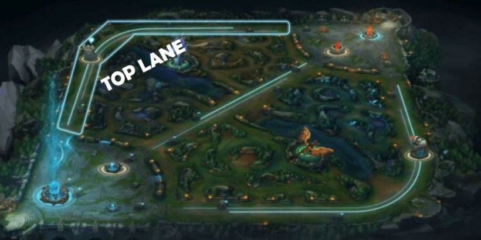
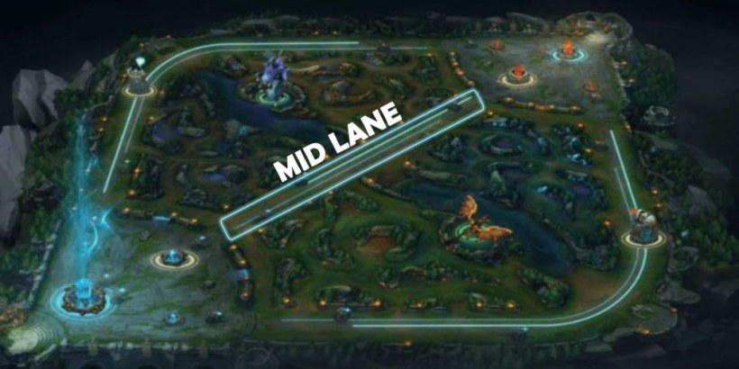
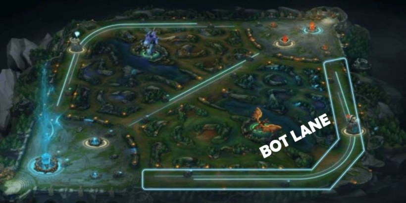

No League of Legends, o Rift é dividido em rotas (ou lanes), e cada uma delas tem um papel fundamental no desenvolvimento da partida. Cada rota demanda um estilo de jogo específico, com diferentes tipos de campeões brilhando em cada posição. Saber qual rota escolher e dominar seu estilo pode ser a diferença entre a vitória e a derrota.
Top: O Reino dos Colossos Solitários

A Top Lane é a rota solo, geralmente ocupada por campeões que podem aguentar bastante dano ou causar um estrago considerável em lutas estendidas. Tanques e lutadores são os reis dessa rota. Se você escolhe Top, sua função é segurar a linha de frente, iniciar lutas e ser o escudo do time.
Aqui, campeões como Garen ou Darius brilham. A Top Lane requer paciência, pois muitas vezes o duelo é lento e estratégico, com trocas calculadas para ganhar vantagens gradualmente. O controle de visão no rio é essencial para evitar ganks.
Mid: A Rota dos Feiticeiros e Assassinos

A Mid Lane é a mais dinâmica e centralizada do jogo, onde magos e assassinos ditam o ritmo. Campeões que gostam de explodir inimigos rapidamente ou causar dano massivo de longe dominam aqui. O Mid Laner geralmente tem grande impacto no mapa devido à sua posição central.
Magos como Ahri ou assassinos como Zed são escolhas comuns. Jogar Mid é sobre maximizar seu impacto no mapa, seja ajudando outras rotas ou controlando a visão para garantir objetivos como o Dragão e o Arauto.
Bot: A Sinergia entre Atirador e Suporte

A Bot Lane é a única rota jogada em dupla – um ADC (atirador) e um Suporte. O ADC foca em causar dano físico à distância, enquanto o Suporte é responsável por manter o ADC vivo e criar oportunidades de abates. Comunicação é a chave aqui.
Atiradores como Jinx brilham ao lado de Suportes como Thresh. Uma boa dupla de Bot pode dominar as lutas 2v2 e garantir uma vantagem de ouro (snowball) que leve o time à vitória.
Jungle: O Controlador do Ritmo do Jogo

A Jungle é a rota invisível. O Jungler não participa das trocas constantes nas lanes, mas tem a missão de gankar (emboscar), garantir objetivos épicos e manter o controle do mapa. É a posição que mais exige leitura de jogo.
Campeões como Lee Sin ou Warwick dominam a selva. O Jungler deve estar sempre atento a todas as rotas e buscar oportunidades para ajudar seus aliados a conquistar vantagem nos objetivos como Dragões e o Barão Nashor.